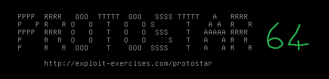

#Protostar x64 - VM Setup
The original Protostar VM is Debian 6, which was released in 2011.
Debian is awkward to download/setup, so I used Ubuntu 12.04.

Credentials (same as original Protostar):
root / godmode
user / user
1. Disable ASLR
user@ubuntu:~$ sudo su
root@ubuntu:/home/user# echo 0 > /proc/sys/kernel/randomize_va_space
root@ubuntu:/home/user# cat /proc/sys/kernel/randomize_va_space
0
2. Install and start SSH
root@ubuntu:/home/user# apt-get install ssh
[...]
root@ubuntu:/home/user# service ssh start
We want to compile the binaries without protoections.
-fno-stack-protector disables stack canaries.
-D_FORTIFY_SOURCE=0 disables fortify.
-z execstack allows for code on the stack to be executed.
3. As root, compile stack0-5 with no protections
user@ubuntu:~$ mkdir -p protostar64/bin
user@ubuntu:~$ cd protostar64/bin/
user@ubuntu:~/protostar64/bin$ sudo su
root@ubuntu:/home/user/protostar64/bin# nano stack0
root@ubuntu:/home/user/protostar64/bin# gcc stack0.c -o stack0 -fno-stack-protector -D_FORTIFY_SOURCE=0 -z execstack
<command-line>:0:0: warning: "_FORTIFY_SOURCE" redefined [enabled by default]
<built-in>:0:0: note: this is the location of the previous definition
[...]
4. Still as root, compile stack6 and stack7 with NX (no-executable stack) protection
root@ubuntu:/home/user/protostar64/bin# nano stack6.c
root@ubuntu:/home/user/protostar64/bin# gcc stack6.c -o stack6 -fno-stack-protector -D_FORTIFY_SOURCE=0
[...]
root@ubuntu:/home/user/protostar64/bin# nano stack7.c
root@ubuntu:/home/user/protostar64/bin# gcc stack7.c -o stack7 -fno-stack-protector -D_FORTIFY_SOURCE=0
[...]
5. Move all the source files to a separate directory (for clean-ups sake)
root@ubuntu:/home/user/protostar64/bin# cd ../
root@ubuntu:/home/user/protostar64# mkdir source
root@ubuntu:/home/user/protostar64# mv bin/*.c source
root@ubuntu:/home/user/protostar64# ls -alh source
total 40K
drwxr-xr-x 2 root root 4.0K Dec 15 08:07 .
drwxrwxr-x 4 user user 4.0K Dec 15 08:07 ..
-rw-r--r-- 1 root root 301 Dec 15 07:35 stack0.c
-rw-r--r-- 1 root root 450 Dec 15 07:54 stack1.c
-rw-r--r-- 1 root root 514 Dec 15 07:55 stack2.c
-rw-r--r-- 1 root root 344 Dec 15 07:56 stack3.c
-rw-r--r-- 1 root root 214 Dec 15 07:57 stack4.c
-rw-r--r-- 1 root root 152 Dec 15 07:57 stack5.c
-rw-r--r-- 1 root root 422 Dec 15 07:58 stack6.c
-rw-r--r-- 1 root root 452 Dec 15 08:01 stack7.c
root@ubuntu:/home/user/protostar64# ls -alh bin
total 104K
drwxrwxr-x 2 user user 4.0K Dec 15 08:07 .
drwxrwxr-x 4 user user 4.0K Dec 15 08:07 ..
-rwxr-xr-x 1 root root 8.3K Dec 15 07:37 stack0
-rwxr-xr-x 1 root root 8.4K Dec 15 07:55 stack1
-rwxr-xr-x 1 root root 8.4K Dec 15 07:55 stack2
-rwxr-xr-x 1 root root 8.4K Dec 15 07:56 stack3
-rwxr-xr-x 1 root root 8.3K Dec 15 07:57 stack4
-rwxr-xr-x 1 root root 8.2K Dec 15 07:57 stack5
-rwxr-xr-x 1 root root 8.5K Dec 15 07:58 stack6
-rwxr-xr-x 1 root root 8.5K Dec 15 08:02 stack7
6. Give all the exploit binaries a SUID bit
root@ubuntu:/home/user/protostar64# cd bin
root@ubuntu:/home/user/protostar64/bin# chmod +s *
root@ubuntu:/home/user/protostar64/bin# ls -alh
total 104K
drwxrwxr-x 2 user user 4.0K Dec 15 08:07 .
drwxrwxr-x 4 user user 4.0K Dec 15 08:07 ..
-rwsr-sr-x 1 root root 8.3K Dec 15 07:37 stack0
-rwsr-sr-x 1 root root 8.4K Dec 15 07:55 stack1
-rwsr-sr-x 1 root root 8.4K Dec 15 07:55 stack2
-rwsr-sr-x 1 root root 8.4K Dec 15 07:56 stack3
-rwsr-sr-x 1 root root 8.3K Dec 15 07:57 stack4
-rwsr-sr-x 1 root root 8.2K Dec 15 07:57 stack5
-rwsr-sr-x 1 root root 8.5K Dec 15 07:58 stack6
-rwsr-sr-x 1 root root 8.5K Dec 15 08:02 stack7
Done!
We're good :)